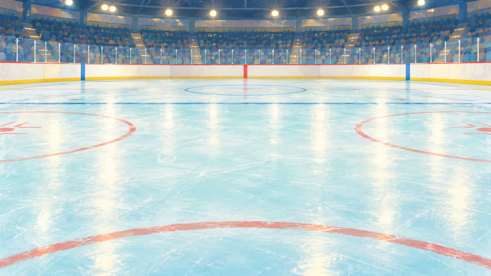
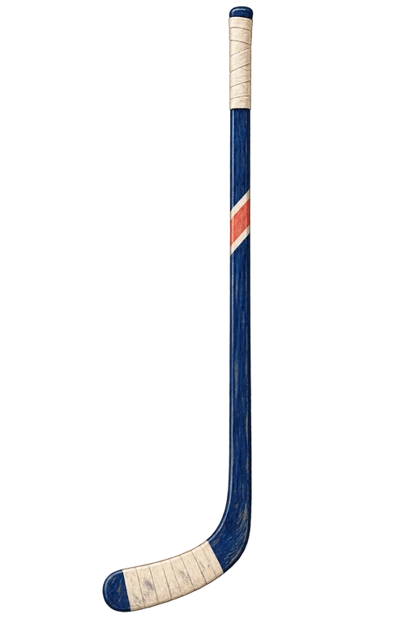
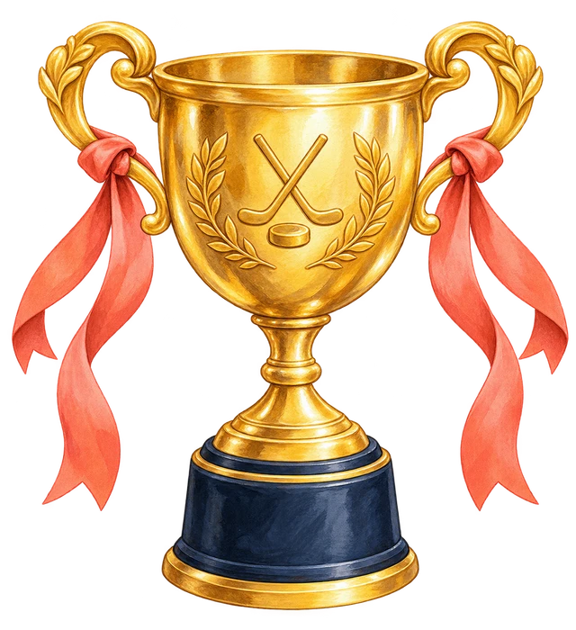

Ш
ХОККЕЙГде спрятался звук Ш?
ЗАБИТО ШАЙБ0 / 13
НАЗОВИ КАРТИНКУ
Где слышится Ш?

ЛЕДОВАЯ ТРЕНИРОВКА РЕЧИ
Где спрятался
звук Ш?
Назови картинку и найди звук Ш в слове.
Отправь шайбу в нужные ворота!
1 Назови2 Прицелься3 Ударь
Загружаем иллюстрации
КАК ИГРАТЬ
Слушай. Целься. Забивай.
Произнеси слово на карточке. Где слышится звук Ш: в начале, середине или конце?
Двигай мышью по льду или веди пальцем. Можно нажать на нужные ворота, чтобы зафиксировать прицел. Коснись льда, чтобы снова целиться. Затем нажми «УДАР!» или на шайбу.
С клавиатуры: ← и → — прицел, пробел — удар.
Если не получилось, попробуй ещё раз!

13 ИЗ 13 · ОТЛИЧНАЯ ИГРА
Вот это чемпион!
Все шайбы в воротах.
Ты нашёл звук Ш во всех словах!